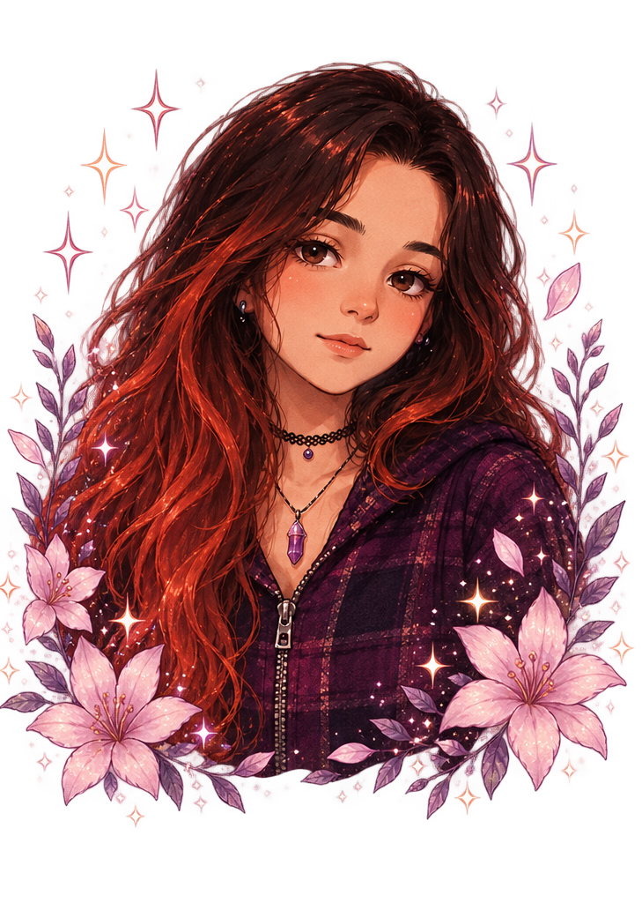

Sobre mí
Mi nombre es Ornella Hanauer y dibujo desde muy pequeña. Siempre me fascinó crear personajes, historias, planos y mundos inspirados en la fantasía, la ciencia ficción y los relatos distópicos.
A través de Dannahid Studio comparto mi crecimiento artístico, mis ilustraciones, mis bocetos y los proyectos que forman parte de mi recorrido creativo.
Este espacio funciona como un portafolio donde reúno mis trabajos, experimentos y procesos de aprendizaje dentro del arte digital y tradicional.
Inspiraciones
Mis principales inspiraciones provienen de la fantasía, la mitología, la ciencia ficción, los videojuegos y las historias con mundos complejos y personajes únicos
Técnicas y herramientas
Disfruto trabajar principalmente con dibujo tradicional, utilizando fibras, crayones, témperas y lápices. Actualmente también estoy explorando el mundo del dibujo digital, aprendiendo nuevas técnicas y procesos creativos.